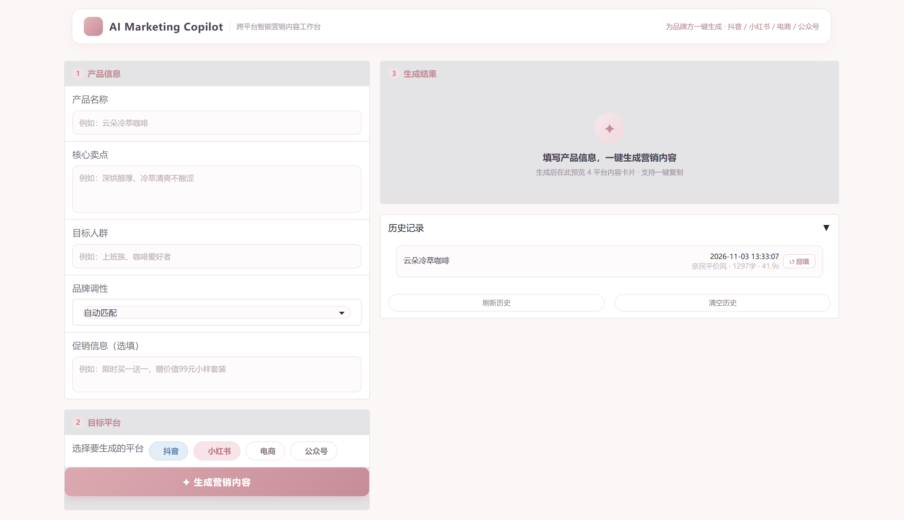
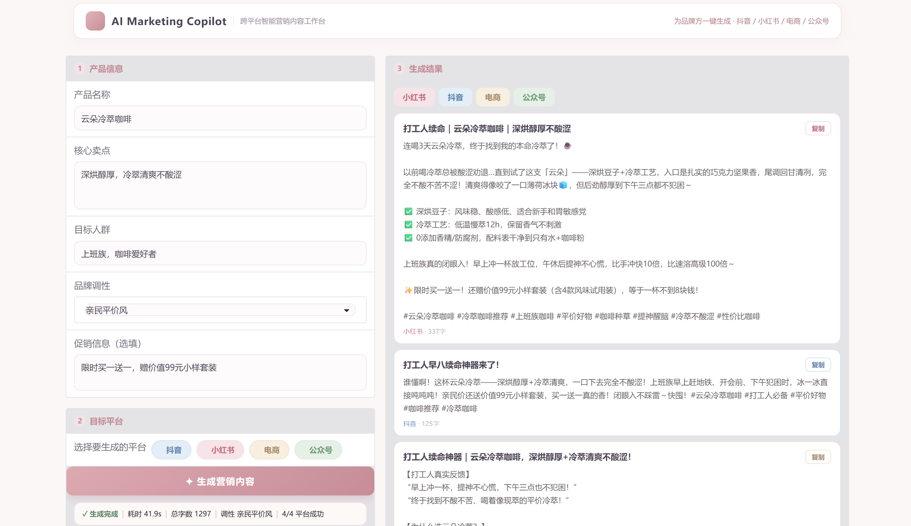

AI Marketing Copilot 跨平台智能营销内容工作台
为品牌方提供"一次输入、四平台适配"的营销内容生产工具：产品信息录入后，系统按平台风格分别生成可直接发布的文案，并支持复制与历史复用。
产品背景与目标
品牌方在社媒运营中需要为同一款产品准备多个平台的内容。不同平台的内容形态、语气、结构与合规要求差异明显，人工逐平台撰写的成本高、质量不稳定，且难以沉淀可复用的内容资产。
本产品的目标是把这个重复过程产品化：一次产品信息录入，产出四个平台的结构化文案，降低单次内容生产的操作成本，同时保证平台适配度与品牌调性一致。
核心问题
效率
一次活动需要 4 个平台、每个平台多版本文案，人工撰写平均小时级耗时。
一致性
多人协作时品牌调性、卖点表述容易漂移，缺少统一的风格约束。
平台适配
抖音要口播节奏、小红书要种草图文、电商要参数化详情、公众号要叙事结构，规则差异大。
产品目标与验收指标
| 目标 | 定义 | 验收口径 |
|---|---|---|
| 生成可用性 | 四个平台均能稳定产出结构化文案，不因格式问题中断 | 生成成功率 100%（80/80） |
| 平台适配度 | 各平台文案符合该平台的内容形态与语气规则 | 平台适配度评分 +15.5% |
| 内容质量 | 信息真实、卖点表达清晰、调性一致 | 四维综合均分 4.34/5（+2.6%） |
| 操作效率 | 全流程可在单一工作台内完成，无需跨工具 | 四平台批量生成单次约 40 秒 |
评分口径：20 个产品 × 4 平台共 80 个测试场景，评审模型对生成物四维打分，剔除证据不足场景后 69 个有效配对进入统计。
目标用户与场景
产品服务的是"需要持续产出多平台内容、但没有专职内容团队"的角色。三类核心用户，需求强度依次递减。
品牌内容运营
负责品牌社媒账号的日常更新，需要按活动节奏高频产出多平台文案。关注效率、平台适配与品牌调性统一。
小品牌 / 独立主理人
没有内容团队，一人兼顾全部渠道。需要低门槛、开箱即用的工具，关注生成结果能否直接发布。
营销策划 / 代理商
为客户批量产出 campaign 素材，关注多产品批次管理与历史复用的效率。
典型使用场景
| 场景 | 用户情境 | 产品要解决的问题 |
|---|---|---|
| 新品上市 | 一款新品需要同步铺四个平台的首发内容 | 一次录入产品信息，四平台文案同时产出，风格自动区分 |
| 日常运营 | 每周固定更新社媒，需要稳定出稿 | 历史记录可回填复用，减少重复输入 |
| 活动促销 | 大促期间需要高频、多版本内容 | 促销信息作为可选输入项，批量生成不同平台版本 |
用户旅程
从"打开工具"到"文案可用"，主流程六个节点。每个节点标注用户目标与产品的对应设计。
了解能做什么
第一次进入，需要快速判断这个工具是否适合自己。
品牌条 + 一句话定位 + 空状态引导文案录入产品信息
填写名称、卖点、人群、调性，促销选填，不应被冗长表单拖住。
五字段分组卡片，必填与选填视觉区分选择目标平台
决定这次要发哪些平台，默认抖音 + 小红书。
平台胶囊多选，四平台专属配色触发生成
点击生成后需要知道系统在做什么、还要等多久。
逐平台进度反馈，状态徽章实时更新审阅结果
分平台查看文案，判断能否直接用，需要字数、耗时等信息辅助决策。
平台胶囊 + 元信息条 + 分平台卡片复用与沉淀
复制文案去发布；下次做同类产品时想复用这次的输入。
一键复制 + 历史记录回填信息架构
单页工作台，采用"左输入、右输出"的双列结构。用户在同一视图内完成录入、生成、审阅与复用，避免跨页面跳转造成的中断。
左列 · 输入区
右列 · 输出区
结构原则：输入与输出的关系在视觉上保持并列，用户不需要记忆"刚才填了什么"即可对照结果；历史记录放在输出区下方，遵循"当前任务优先、沉淀资产其次"的层级。
核心交互设计
五个关键交互决策，每个都对应一个具体的用户问题：不知道从哪开始、不知道系统在做什么、不知道结果可信不可信、不知道下一步怎么用、不知道上次填了什么。
空状态作为行动邀请
逐平台进度反馈
元信息条建立结果可信度
一键复制直达使用
历史记录回填复用
交互原则小结
可见性
系统状态始终可见：在生成中、成功、失败分别有明确反馈，不让用户面对无反馈的等待。
就近操作
操作按钮出现在对应内容旁：复制按钮在卡片上、回填按钮在历史条目上，不集中堆到页面底部。
渐进呈现
信息按使用顺序出现：先给结果与元信息，再给明细卡片，历史记录默认折叠，避免首屏过载。
状态与边界设计
生成类产品的体验差异，主要体现在异常态与边界条件。以下状态均在界面中有明确对应，用户在任何时刻都知道“发生了什么、能做什么”。
填写产品信息，一键生成营销内容
边界情况处理
| 边界场景 | 潜在风险 | 处理方式 |
|---|---|---|
| 平台间字数差异大 | 电商详情页 400+ 字、抖音口播 120+ 字，卡片高度差异明显 | 卡片按内容自适应高度，正文 pre-wrap 保留换行，不截断 |
| 文案含 emoji / 特殊符号 | 小红书种草文案大量使用 emoji，可能破坏排版 | 正文按纯文本渲染并保留换行，复制时原样写入剪贴板 |
| 仅选一个平台 | 元信息条“k/4”语义不准确 | 按实际选择数量显示“k/n 平台成功”，未选平台不出卡 |
| 重复生成同一产品 | 历史条目重复堆积 | 每次生成独立记录，按时间倒序，最新在前 |
| 窄屏 / 小窗口 | 双列结构挤压、卡片内容换行错乱 | 窄屏自动折叠为单列，输入区在上、结果区在下 |
视觉规范
产品面向品牌方使用，视觉定位为克制、浅色、有质感的工作台——专业感来自版式与层级，而不是装饰。四平台各有专属色，用于在界面中快速区分内容归属。
基础色板
#FBF7F6#FFFFFF#4B4453#8C7F86#F0E6EA#C68D98平台专属色
#E4EEF7 / #5E86B3#F7E4E8 / #C4707F#F8EFE0 / #A98E6A#E6F0E7 / #6E9C78平台色只使用低饱和底色 + 对应深色文字的组合，保证浅色系统一的同时，用户在结果区与平台选择区能凭颜色快速定位。
字体与字号层级
| 层级 | 字号 | 字重 | 用途 |
|---|---|---|---|
| 品牌标题 | 28–32px | 700 | 顶栏品牌名 |
| 区块标题 | 15px | 700 | 产品信息 / 生成结果等分组 |
| 正文 | 14–15px | 400 | 文案正文、说明文字 |
| 辅助信息 | 12–13px | 400 | 元信息条、字数、时间 |
| 微标签 | 11–12px | 600 | 平台胶囊、状态徽章 |
统一使用系统中文字体栈（Microsoft YaHei / PingFang SC），不引入额外字体文件；层级只靠字号与字重建立，不靠颜色堆叠。
形状与间距
| 要素 | 规范 | 说明 |
|---|---|---|
| 圆角 | 卡片 14px / 控件 9px / 胶囊全圆 | 大容器圆角大于小控件，形成层级 |
| 边框 | 1px 细线 #F0E6EA | 不用重边框，靠线与留白分隔 |
| 阴影 | 0 6px 20px rgba(196,141,152,.07) | 只给浮起的卡片，避免满屏投影 |
| 区块间距 | 分组间 20–24px，组内 10–14px | 用间距表达分组关系 |
界面实拍

初始状态：左列输入区（产品信息 + 目标平台 + 生成操作），右列空状态引导与历史记录。

结果状态：平台胶囊切换、元信息条（耗时 / 字数 / 调性 / 成功率）、分平台卡片与复制按钮。
效果验证
产品上线前，用对照实验验证“平台专属 Agent + 平台化呈现”是否真的提升了内容质量。这组数据同时是 PRD 验收指标的回填。
20 个产品 × 4 平台，有效配对 69 个
较基线 4.23 提升 2.6%
3.84 → 4.43，提升最显著的维度
双组 80/80，无生成失败
四维评分明细
| 维度 | 基线（A 组） | 完整系统（B 组） | 变化 |
|---|---|---|---|
| 平台适配度 | 3.84 | 4.43 | +15.5% |
| 调性一致性 | 4.52 | 4.41 | 基本持平 |
| 卖点表达 | 4.72 | 4.74 | 基本持平 |
| 信息依据 | 3.84 | 3.78 | 基本持平 |
评分由评审模型（temperature 0.1）按五档量纲执行；任一维度证据引用不足的场景整场景剔除（11 个），避免不可信评分进入统计。
结论与设计含义
平台化策略有效
平台适配度是唯一显著提升的维度——证明“平台专属 Agent + 平台化结果呈现”是这套产品最核心的价值来源。
质量下限被抬高
四维评分全部 ≥4 分的场景从 37 个增至 47 个（68.1%），说明产出更稳定，用户不必逐条重写。
局限与权衡
增强系统单场景耗时 9.3s，高于基线 5.2s——质量提升以等待时间为代价；电商平台表现基本持平，是后续优化重点。
迭代与规划
从功能可用到产品可用，关键是把“能生成”升级成“愿意用”。以下是已经完成的迭代与下一步方向。
功能验证版
完成四平台生成主链路与双路检索，界面为默认组件布局，验证功能可行。
质量评估
80 场景对照实验落地，综合评分 4.34/5，平台适配度 +15.5%，确定产品核心价值点。
产品化改造
重构为卡片式工作台：空状态引导、逐平台进度、元信息条、一键复制、历史回填，视觉规范统一为浅色轻奢体系。
规划中的迭代
P1：新增品牌调性库（多品牌切换，保证调性一致性）；P2：批量导出与多产品批次管理；P3：A/B 文案对比，支持选中更优版本沉淀。